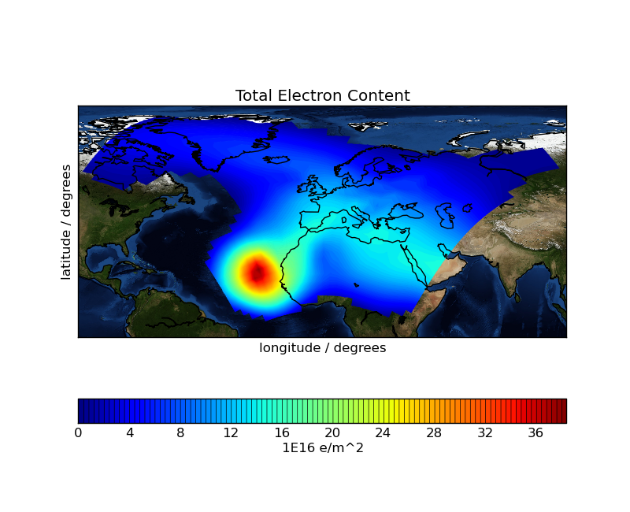

Iris 0.9
This space weather example plots a filled contour of rotated pole point data with a blue marble underlay. The plot shows aggregated vertical electron content in the ionosphere.
The plot exhibits an interesting outline effect due to excluding data values below a certain threshold.

"""
Ionosphere space weather
========================
This space weather example plots a filled contour of rotated pole point data with a blue marble underlay.
The plot shows aggregated vertical electron content in the ionosphere.
The plot exhibits an interesting outline effect due to excluding data values below a certain threshold.
"""
import matplotlib.pyplot as plt
import numpy as np
import iris
import iris.plot as iplt
import iris.quickplot as qplt
def total_electron_content_filter(cube, field, filename):
# Filter out all cubes that don't have a matching 'long_name' attribute.
if hasattr(field, 'long_name') and field.long_name != 'total electron content':
raise iris.exceptions.IgnoreCubeException()
def main():
# Load the "total electron content" cube.
filename = iris.sample_data_path('space_weather.nc')
cube = iris.load_strict(filename, 'total electron content')
# Explicitly mask negative electron content.
cube.data = np.ma.masked_less(cube.data, 0)
# Currently require to remove the multi-dimensional
# latitude and longitude coordinates for Iris plotting.
cube.remove_coord('latitude')
cube.remove_coord('longitude')
# Plot the cube using one hundred colour levels.
qplt.contourf(cube, 100)
plt.title('Total Electron Content')
plt.xlabel('longitude / degrees')
plt.ylabel('latitude / degrees')
iplt.gcm().bluemarble(zorder=-1)
iplt.gcm().drawcoastlines()
plt.show()
if __name__ == '__main__':
main()